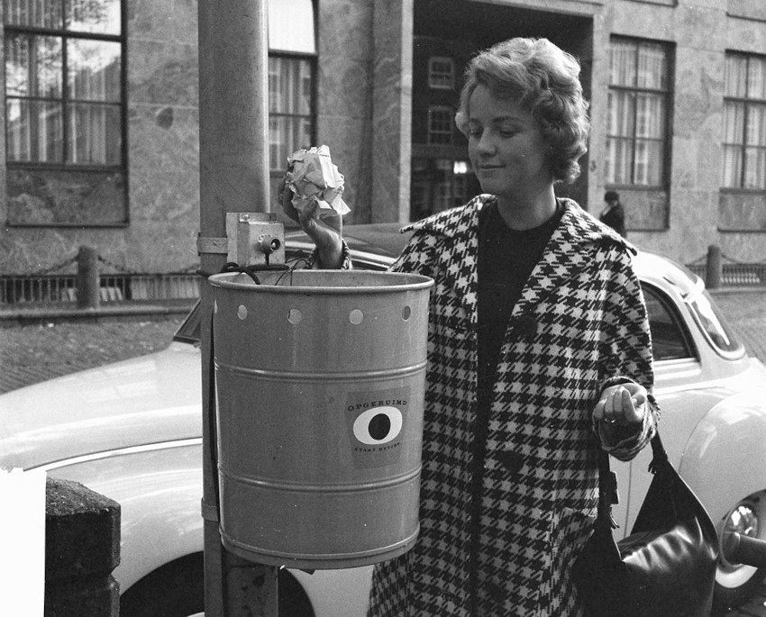

Un món sense nostàlgia
JOSÉ HEINZ
¿Què passa quan el passat no acaba de desaparèixer mai del tot, sinó que es recicla a través de noves formes?

La indústria de l'entreteniment ha suprimit els finals. Les seves estratègies per vendre més fomenten un reciclatge de continguts que impedeix que s'acabin o caduquin. ¿És possible la nostàlgia si ho tenim tot al davant permanentment?
Quan va haver acabat la quarta cançó de la seva llista de reproducció
personalitzada, DJ Livi, la intel·ligència artificial de Spotify, em va indicar amb veu
amable: Bé, tornem una estona al 2021. Això és una mescla del que vas
escoltar aquell any
. A continuació, efectivament, van començar a sonar cançons
que havia escoltat amb freqüència feia uns quants anys, peces musicals que
recordava bé, però que feia temps que no premia el play per sentir: em feien
present un passat proper, massa proper per produir un efecte nostàlgic. No hi
havia melangia ni sensació de pèrdua, en aquella evocació. Era més aviat un
record un xic borrós, com l'estampat d'una samarreta que ja hem rentat uns quants
cops.
Si entenem per nostàlgia l'emoció que experimentem quan el passat reapareix breument en el present, ¿com podríem definir els efectes que promou aquesta funció de Spotify en particular i la cultura del segle XXI en general? ¿Què passa quan el passat no acaba de desaparèixer mai del tot, sinó que es recicla a través de noves formes? El crític estatunidenc Grafton Tanner en diu persemprisme (foreverism), que és una manera d'establir que la digitalització de les últimes dècades (els records, les obres d'art, el coneixement) impulsa una idea de present continu, sense possibilitat de final. I des d'allà planteja un interrogant per pensar l'època: ¿és possible l'enyor si ho tenim tot al davant permanentment?
El present perpetu
Si a la segona meitat del segle XX publicistes i productors van començar a veure la nostàlgia com una estratègia de màrqueting efectiva (recordeu el pitch sobre el projector de diapositives de Don Draper), en els últims anys la indústria de l'entreteniment sembla que ha optat per un objectiu més ambiciós: evitar directament la desaparició de les coses perquè la roda no s'aturi mai.
És vàlid demanar-se què diferenciaria aquesta actitud de, per exemple, l'enèsima edició d'un clàssic de la literatura que fa anys que es llegeix, reimpressió rere reimpressió. La resposta rau en el reciclat. A Foreverism (disponible en castellà: Porsiemprismo), Tanner diferencia entre la preservació, la restauració i el fet de persempritzar una cosa. Ho exemplifica amb un grup de rock llegendari. En aquest cas, preservar-ne el llegat seria mantenir-ne les gravacions d'estudi en condicions òptimes. La restauració de l'obra, per altra banda, equivaldria a millorar aquests materials originals a través de tècniques més actuals, com una nova mescla d'àudio o una remasterització perquè sonin tan nítids com es pugui, però sempre amb la intenció de mantenir l'esperit original del grup.
La persemprització, en canvi, intenta renovar aquest llegat per mitjà de diferents estratègies. Per exemple, gires mundials amb integrants nous que substitueixen els originals, documentals, espectacles musicals inspirats en l'agrupació o àlbums de remescles a càrrec de grups d'artistes més joves, que ofereixen una relectura adaptada als temps que corren. És una actitud que fomenta un contínuum de contingut, apte per a totes les edats, tant per als que van viure l'època d'esplendor de l'artista com per a les noves generacions.Una indústria que sempre troba la manera de vendre'ns coses.
Això també es percep clarament en les grans sagues cinematogràfiques o en els multiversos dels superherois. Gràcies a un èxit inicial cada cop més llunyà, però sobretot gràcies a la seva legió de fanàtics, universos com el de Star Wars o els dels personatges de Marvel s'estenen a través de pel·lícules i sèries noves, que al seu torn es retroalimenten amb debats en xarxes socials, pòdcasts i vídeos d'aficionats, cosa que fa que estar al dia d'aquestes narratives eixamplades resulti aclaparador i sigui apte només per a experts. Això genera un espectador ansiós i semiinformat, que consumeix aquesta mena de productes no pas com una obra, sinó com un contingut.